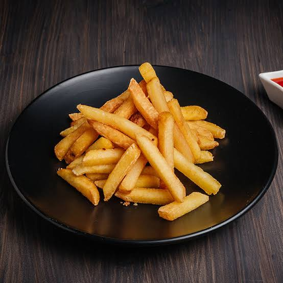
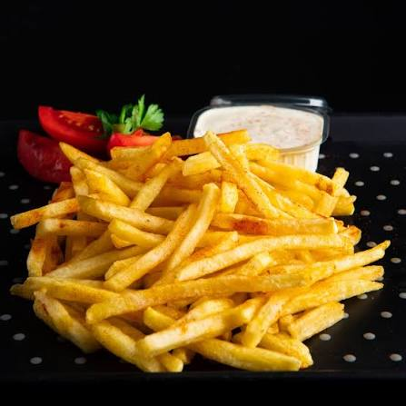
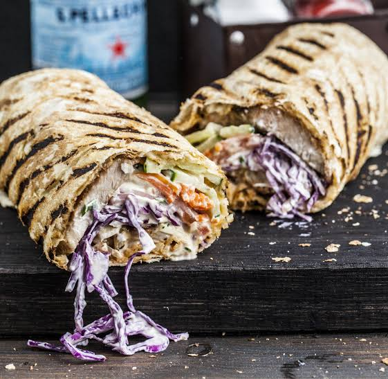
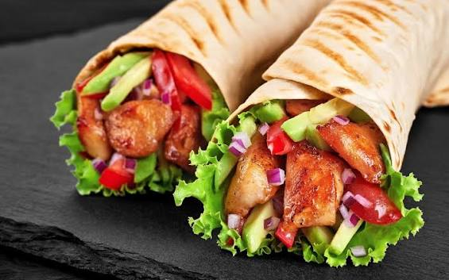
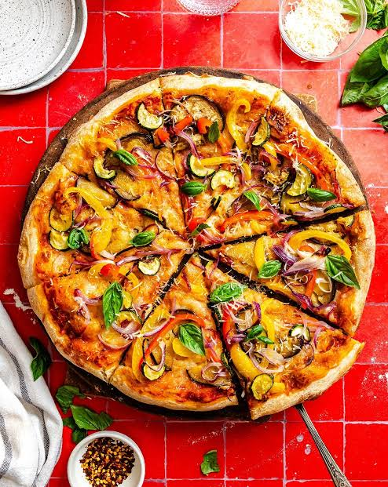

Хот-дог (hot dog) — ин яке аз маъмултарин намудҳои фастфуд дар ҷаҳон аст, ки аз булочкаи дарозрӯя ва сосискаи гарм иборат мебошад. Odатан ба он соусҳо ва сабзавотҳои гуногун илова мекунанд
Булочка: Нони махсуси мулоим ва дарозрӯя.Сосиска: Сосискаи ҷӯшонидашуда ё дар грил пухташуда.Соусҳо: Кетчуп, майонез ва хардал (горчица).Иловагиҳо: Бодиринги шӯр (намакдор), пиёз (хом ё бирён), карам ва панир.


Бургер (hamburger) — ин яке аз машҳуртарин ва серхаридортарин намудҳои фастфуд дар ҷаҳон аст, ки аз нони гирд ва котлети гӯштӣ иборат мебошад.
Нон: Булочкаи мулоими гирд, ки аксар вақт бо кунҷит оро дода мешавад.Котлет: Одатан аз гӯшти гови қимашуда дар грил ё тоба пухта мешавад.Сабзавот: Барги салат, помидор, бодиринги шӯр ва пиёз.Соусҳо: Кетчуп, майонез ва хардал (горчица).


Фри (fries) — ин картошкаи реза ва дар равғани гарм пухташуда мебошад, ки аксар вақт ҳамчун иловагӣ ба бургер ва хот-дог хизмат мекунад.
Картошка: Картошкаи тоза ва реза кардашуда, ки дар равғани гарм пухта мешавад.Сол: Намак ва баъзан дигар ҳанутҳо барои таъм илова карда мешаванд.Соусҳо: Кетчуп, майонез ва соусҳои махсус барои фри.


Шауэрма (shawarma) — ин яке аз машҳуртарин ва серхаридортарин намудҳои фастфуд дар ҷаҳон аст, ки аз нони гирд ва котлети гӯштӣ иборат мебошад.
Нон: Булочкаи мулоими гирд, ки аксар вақт бо кунҷит оро дода мешавад.Котлет: Одатан аз гӯшти гови қимашуда дар грил ё тоба пухта мешавад.Сабзавот: Барги салат, помидор, бодиринги шӯр ва пиёз.Соусҳо: Кетчуп, майонез ва хардал (горчица).


Пицца (pizza) — ин яке аз машҳуртарин ва серхаридортарин намудҳои фастфуд дар ҷаҳон аст, ки аз нони гирд ва котлети гӯштӣ иборат мебошад.
Нон: Булочкаи мулоими гирд, ки аксар вақт бо кунҷит оро дода мешавад.Котлет: Одатан аз гӯшти гови қимашуда дар грил ё тоба пухта мешавад.Сабзавот: Барги салат, помидор, бодиринги шӯр ва пиёз.Соусҳо: Кетчуп, майонез ва хардал (горчица).